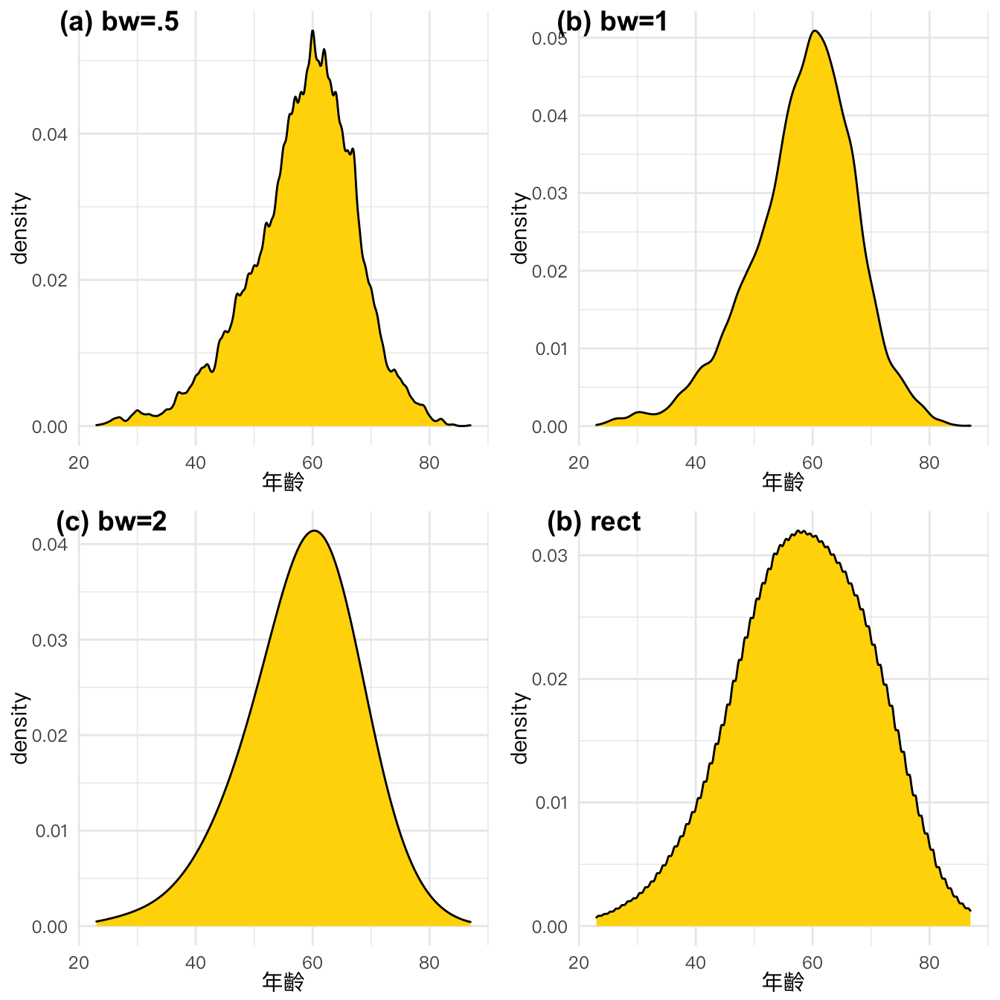
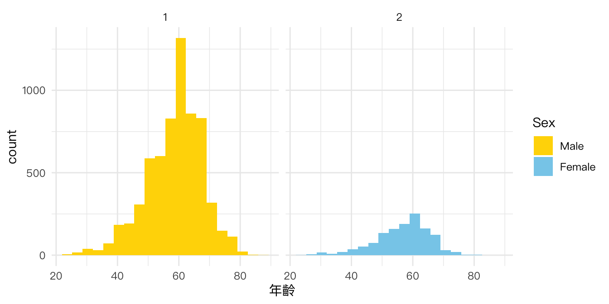

Chapter 12 Visual Principles
Most of contet in the chapter comes from the book Claus o. Wilke’s “Foundamentals of Data Visualization”
12.1 Dataset
- 111B歲出政事別預算表.xls -
- 111B歲出政事別預算總表.xls
- 臺北市住宅竊盜點位資訊-UTF8-BOM-1.csv
- opendata107Y020.csv
- opendata110Y060.csv
- tptheft.csv
- tw_income_107.csv
- tw_population_opendata110N010.csv
- tw_salary109.xlsx
- villmast_excel.xls
- WORLD-MACHE_Gender_6.8.15.xls
12.2 Distribution: Histogram and Density plot
vilmaster <- readr::read_csv("data/tw_vil2018_elccand.csv") %>%
drop_na(當選註記)12.2.1 Density plot
p1 <- vilmaster %>%
ggplot() + aes(年齡) +
geom_density() + th
p2 <- vilmaster %>%
ggplot() + aes(年齡, fill=factor(性別)) +
geom_density(alpha=0.5) + th +
scale_fill_manual(
limits=c('1', '2'), # original chart group
values=c("gold", "skyblue"), # map to color
name="性別", # legend title
breaks=c(1, 2), # original legend group labels
labels=c("Male","Female"), # map to new labels
na.value = "lightgrey" # color for other groups
)
cowplot::plot_grid(
p1, p2,
labels = c("(a) Overall", "(b) Group by gender"),
nrow = 1, rel_widths = c(1, 1)
)
12.2.2 Density with different bandwidth
library(ggridges) # for geom_density_line()
p.b05 <- vilmaster %>% ggplot() + aes(年齡) +
geom_density_line(fill='gold', bw=0.5, kernel='gaussian') + th
p.b1 <- vilmaster %>% ggplot() + aes(年齡) +
geom_density_line(fill='gold', bw=1, kernel='gaussian') + th
p.b5 <- vilmaster %>% ggplot() + aes(年齡) +
geom_density_line(fill='gold', bw=5, kernel='gaussian') + th
p.rect <- vilmaster %>% ggplot() + aes(年齡) +
geom_density_line(fill='gold', bw=8, kernel='rectangular') + th
cowplot::plot_grid( p.b05, p.b1, p.b5, p.rect,
labels = c("(a) bw=.5", "(b) bw=1", "(c) bw=2", "(b) rect"),
nrow = 2, rel_widths = c(1, 1)
)
12.2.3 Histogram with different number of bins
p10 <- vilmaster %>%
ggplot() + aes(年齡) +
geom_histogram(bins=10, fill='royalblue') + th
p20 <- vilmaster %>%
ggplot() + aes(年齡) +
geom_histogram(bins=20, fill='royalblue') + th
p30 <- vilmaster %>%
ggplot() + aes(年齡) +
geom_histogram(bins=30, fill='royalblue') + th
p40 <- vilmaster %>%
ggplot() + aes(年齡) +
geom_histogram(bins=40, fill='royalblue') + th
cowplot::plot_grid(
p10, p20, p30, p40,
labels = c("(a) bins=10", "(b) bins=20", "(c) bins=30", "(b) bins=40"),
nrow = 2, rel_widths = c(1, 1)
)
12.2.4 Density vs histogram
pd <- vilmaster %>%
ggplot() + aes(年齡, fill=factor(性別)) +
geom_density(alpha=0.5) + th +
scale_fill_manual(
values=c("1"='gold', '2'="skyblue"),
labels=c('1'="Male",'2'="Female"),
name='Sex'
)
ph <- vilmaster %>%
ggplot() + aes(年齡, fill=factor(性別)) +
geom_histogram(bins=20, position="dodge") + th +
scale_fill_manual(values=c("1"='gold', '2'="skyblue ")) +
theme(legend.position="none")
cowplot::plot_grid(
pd, ph,
labels = c("(a) geom_density()", "(b) geom_histogram()"),
nrow = 1, rel_widths = c(6, 4)
)
12.2.5 Positions of bar chart
p.hist.dodge <- vilmaster %>%
ggplot() + aes(年齡, fill=factor(性別)) +
geom_histogram(bins=20, position="dodge") + th +
scale_fill_manual(
values=c("1"='gold', '2'="skyblue "),
labels=c('1'="Male",'2'="Female"),
name='Sex'
)
p.hist.stack <- vilmaster %>%
ggplot() + aes(年齡, fill=factor(性別)) +
geom_histogram(bins=20, position="stack") + th +
scale_fill_manual(values=c("1"='gold', '2'="skyblue ")) +
theme(legend.position="none")
cowplot::plot_grid(
p.hist.dodge, p.hist.stack,
labels = c("(a) position:dodge", "(b) position:stack"),
nrow = 1, rel_widths = c(6, 4)
)
12.2.6 Display two groups histogram by facet_wrap()
vilmaster %>%
ggplot() + aes(年齡, fill=factor(性別)) +
geom_histogram(bins=20, position="dodge") + th +
scale_fill_manual(
values=c("1"='gold', '2'="skyblue "),
labels=c('1'="Male",'2'="Female"),
name='Sex'
) +
facet_wrap(.~性別, nrow=1)
12.2.7 Modify geom_col() to pyramid plot
vilmaster %>%
group_by(性別) %>%
mutate(age_group = cut(年齡, 0:20*5+.01)) %>%
count(age_group) %>%
ungroup() %>%
ggplot() + aes(x=age_group,
y=ifelse(性別=='1', -1, 1)*n,
fill=factor(性別)) +
geom_col() +
scale_y_continuous(name = "Count", breaks = 250*(-6:2), labels = c("1500", "1250", "1000", "750", "500", "250", "0", "250", "500")) +
coord_flip() +
scale_fill_manual(
values=c("1"='gold', '2'="skyblue "),
labels=c('1'="Male",'2'="Female"),
name='Sex'
) + th + labs(y="Count", x="Age Group")